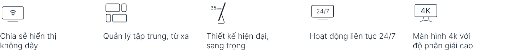

Với độ phân giải 4K Ultra HD tuyệt đẹp và khả năng chia sẻ nội dung dễ dàng, giải pháp hiển thị chia sẻ, kết nối không dây ViewSonic CDE30 sẽ giúp các cuộc họp, hội thảo trở nên hiệu quả hơn ở trong bất kỳ không gian nào.
Nhận tư vấnVới phần mềm ViewBoardCast và myViewBoard Display, người dùng có thể dễ dàng chia sẻ nội dung trực tiếp từ thiết bị của họ lên màn hình mà không cần sử dụng cáp kết nối.
Cho dù nhân viên của bạn đang ngồi ở văn phòng hay làm việc từ xa, họ đều có thể dễ dàng kết nối, hợp tác hiệu quả với giải pháp ViewSonic CDE30 Series.

Độ phân giải Utral HD
Với độ phân giải 4K, màn hình Ultra HD 3840x2160 sẽ mang lại trải nghiệm xem ấn tượng cùng hình ảnh sống động và chân thực
Tích hợp hệ thống điều khiển AV
Các màn hình trình chiếu CDE30 của ViewSonic tương thích với các hệ thống điều khiển Extron, AMX và Crestron Pro-AV, đồng thời có thể được tích hợp vào hạ tầng AV hiện tại, cũng như được giám sát và điều khiển từ bất kỳ đâu (on-site hoặc từ xa).
Đăng ký trải nghiệmTương thích với các ứng dụng trong không gian làm việc
Hoạt động hiệu quả với các ứng dụng dựa trên đám mây (cloud-based) dành cho Android như Zoom Room, Microsoft Teams và Microsoft 365 cũng như nhiều ứng dụng khác.
Dễ dàng chia sẻ nội dung
myViewBoard Display là ứng dụng dựa trên nền tảng đám mây cho phép bạn chia sẻ màn hình của mình từ khắp mọi nơi trên thế giới mà không cần phải cài đặt thêm phần mềm thứ ba. Ngoài ra, ứng dụng ViewBoard Cast cho phép truyền trực tiếp nội dung từ các thiết bị di động lên màn hình thông qua mạng nội bộ, bao gồm khả năng chia sẻ cùng lúc nhiều màn hình.
Quản lý thiết bị theo luồng
myViewBoard Manager là một ứng dụng trên nền tảng web, cho phép người dùng dễ dàng thiết lập, quản lý, giám sát và bảo trì tất cả các thiết bị hiển thị của mình từ dashboard điều khiển trung tâm. Khả năng truy cập dựa trên đám mây (cloud-based) cho phép các quản trị viên IT truy cập từ xa, giám sát và quản lý các thiết bị từ bất kỳ đâu.
Quản lý Nội dung dễ dàng
Phần mềm Signage Manager (SW-216) cho phép người dùng dễ dàng chuyển nội dung đa phương tiện lên màn hình từ máy tính. Ngoài ra phần mềm cũng cho phép bạn định dạng, lập lịch và lưu cài đặt phát lại, đẩy nội dung với tối đa 5 vùng thông qua mạng nội bộ hoặc USB.
Liên hệ mua hàngKết nối USB-C
Khả năng kết nối USB-C cung cấp nguồn điện đến 15W thuận tiện cho việc sạc điện các thiết bị ngoại vi và các phụ kiện khác. Màn hình cũng có thể hỗ trợ DisplayPort 1.2 và USB 2.0 trên các Adapter tuỳ chọn.